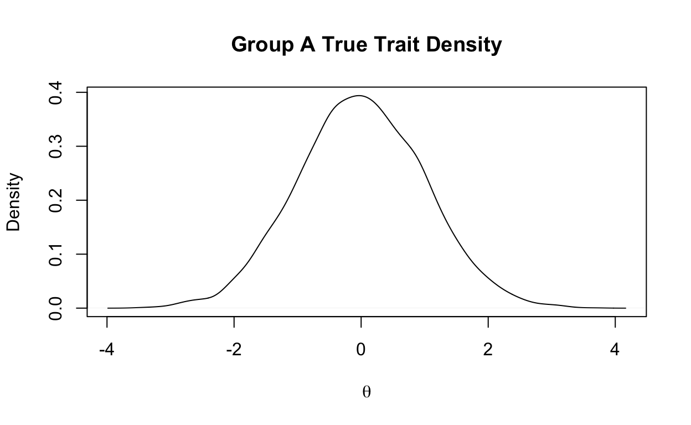
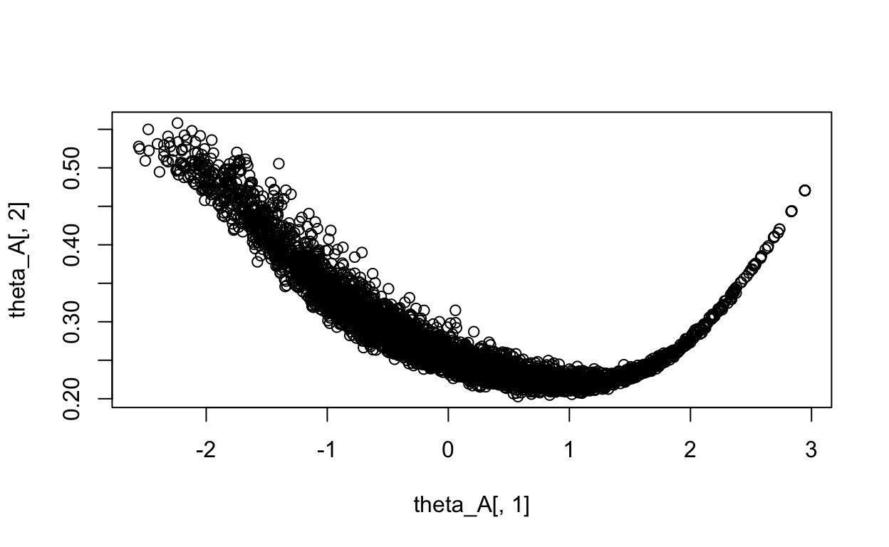
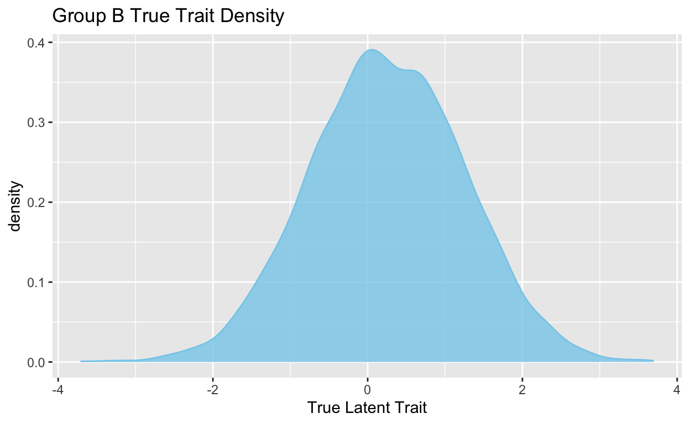

This simulation study is to show how to do IRT Linking Process using mirt R Package. The simulation data includes 2 forms - Form A and Form B. These 2 forms are simulated based on 2 groups of individual, one group has 0 mean trait, another has 0.25 mean trait. Both groups have same sd.
The means and sds of simulated Form A and B are like:
\[ \theta_{A} = \theta_{B} - 0.25 \\ \sigma_A^2 = \sigma_B^2 \]
The mean of \(\theta\) for individuals administrated with form A is 0, the standard deviation (SD=1). In the dataset, X is ID, V1 is true trait (\(\theta\)), V3 to V52 is unique items, V54 to V63 are common items.
First of all, have a look at the data
library(mirt)
library(tidyverse)
library(knitr)
### Read in Raw data from Form A:
dat <- read.csv(file="FormA.csv")
glimpse(dat)
Rows: 5,000
Columns: 64
$ X <int> 1, 2, 3, 4, 5, 6, 7, 8, 9, 10, 11, 12, 13, 14, 15, 16, 1…
$ V1 <dbl> -0.79498, -0.05589, 0.62650, -1.26832, 0.74921, 1.00922,…
$ V2 <lgl> NA, NA, NA, NA, NA, NA, NA, NA, NA, NA, NA, NA, NA, NA, …
$ V3 <int> 0, 1, 1, 1, 1, 1, 0, 1, 0, 1, 1, 1, 1, 1, 1, 1, 1, 1, 0,…
$ V4 <int> 0, 1, 1, 0, 1, 1, 1, 1, 1, 1, 1, 1, 1, 1, 0, 1, 1, 1, 1,…
$ V5 <int> 1, 0, 1, 0, 1, 1, 1, 1, 1, 1, 0, 1, 0, 1, 0, 1, 1, 1, 0,…
$ V6 <int> 0, 0, 1, 1, 1, 0, 0, 0, 0, 1, 0, 1, 1, 1, 1, 1, 0, 1, 0,…
$ V7 <int> 0, 0, 0, 0, 1, 0, 0, 0, 0, 0, 0, 1, 0, 0, 0, 1, 0, 0, 0,…
$ V8 <int> 1, 1, 1, 0, 1, 0, 1, 1, 1, 1, 1, 1, 1, 0, 0, 1, 1, 0, 1,…
$ V9 <int> 0, 0, 0, 0, 1, 0, 1, 1, 0, 1, 1, 0, 1, 0, 0, 1, 0, 1, 1,…
$ V10 <int> 0, 0, 1, 1, 1, 0, 0, 0, 0, 0, 1, 1, 0, 0, 1, 0, 1, 0, 0,…
$ V11 <int> 0, 1, 1, 1, 0, 1, 0, 0, 1, 1, 0, 1, 1, 0, 0, 1, 0, 1, 0,…
$ V12 <int> 0, 1, 1, 0, 1, 1, 1, 0, 1, 0, 0, 0, 0, 0, 0, 1, 0, 0, 0,…
$ V13 <int> 0, 0, 0, 1, 0, 1, 0, 0, 1, 1, 0, 1, 0, 0, 0, 0, 1, 0, 1,…
$ V14 <int> 0, 1, 1, 0, 1, 1, 0, 1, 1, 1, 0, 1, 1, 1, 0, 1, 1, 1, 0,…
$ V15 <int> 0, 0, 0, 1, 1, 1, 0, 1, 0, 1, 0, 0, 1, 0, 0, 0, 0, 1, 1,…
$ V16 <int> 1, 1, 1, 1, 1, 1, 1, 0, 1, 1, 1, 1, 1, 1, 0, 0, 0, 1, 0,…
$ V17 <int> 0, 0, 1, 0, 1, 0, 0, 1, 0, 0, 0, 0, 0, 0, 0, 0, 0, 0, 0,…
$ V18 <int> 0, 0, 1, 1, 0, 1, 0, 1, 1, 1, 0, 1, 1, 0, 0, 1, 1, 1, 1,…
$ V19 <int> 1, 1, 1, 0, 0, 0, 0, 1, 1, 1, 0, 1, 1, 1, 1, 1, 0, 0, 1,…
$ V20 <int> 1, 0, 0, 0, 1, 1, 0, 0, 1, 1, 1, 1, 1, 0, 1, 0, 0, 1, 0,…
$ V21 <int> 1, 1, 1, 0, 1, 0, 1, 1, 0, 1, 1, 1, 1, 1, 1, 1, 1, 1, 1,…
$ V22 <int> 0, 0, 1, 0, 0, 1, 0, 0, 0, 0, 0, 1, 0, 0, 0, 1, 0, 0, 0,…
$ V23 <int> 0, 0, 0, 0, 1, 1, 1, 1, 1, 1, 0, 1, 0, 0, 0, 0, 0, 1, 0,…
$ V24 <int> 0, 1, 1, 0, 1, 1, 0, 0, 0, 1, 1, 1, 1, 0, 0, 1, 1, 1, 0,…
$ V25 <int> 0, 1, 0, 1, 0, 0, 1, 0, 0, 1, 1, 1, 0, 0, 0, 0, 0, 0, 0,…
$ V26 <int> 0, 0, 1, 0, 1, 1, 0, 1, 0, 1, 0, 1, 1, 1, 0, 1, 1, 0, 0,…
$ V27 <int> 0, 0, 0, 0, 1, 1, 0, 0, 0, 1, 0, 1, 0, 0, 1, 0, 0, 1, 0,…
$ V28 <int> 0, 0, 0, 0, 0, 0, 0, 0, 0, 0, 0, 1, 0, 0, 0, 0, 1, 1, 0,…
$ V29 <int> 0, 0, 0, 0, 1, 0, 0, 1, 0, 1, 1, 1, 0, 0, 0, 1, 0, 1, 0,…
$ V30 <int> 1, 0, 1, 0, 1, 0, 0, 1, 1, 1, 0, 1, 1, 1, 0, 0, 0, 1, 1,…
$ V31 <int> 1, 1, 0, 0, 0, 1, 0, 0, 1, 1, 0, 1, 0, 0, 1, 1, 1, 1, 1,…
$ V32 <int> 0, 0, 1, 0, 1, 0, 0, 1, 1, 1, 1, 1, 1, 1, 0, 1, 0, 1, 0,…
$ V33 <int> 0, 0, 1, 0, 1, 1, 0, 0, 0, 1, 0, 1, 0, 1, 0, 0, 0, 1, 0,…
$ V34 <int> 1, 1, 0, 1, 1, 0, 1, 1, 1, 1, 0, 1, 1, 1, 1, 1, 0, 1, 1,…
$ V35 <int> 0, 0, 1, 1, 1, 1, 1, 0, 1, 1, 1, 1, 0, 1, 1, 1, 0, 1, 1,…
$ V36 <int> 0, 1, 0, 0, 1, 1, 1, 1, 1, 1, 0, 1, 1, 1, 0, 1, 1, 1, 1,…
$ V37 <int> 0, 1, 1, 0, 1, 1, 1, 1, 1, 1, 1, 1, 1, 1, 0, 1, 0, 1, 0,…
$ V38 <int> 1, 0, 0, 0, 0, 1, 1, 1, 0, 0, 1, 1, 0, 0, 0, 1, 1, 0, 0,…
$ V39 <int> 1, 1, 1, 0, 0, 1, 1, 1, 1, 1, 1, 1, 0, 1, 0, 1, 0, 1, 1,…
$ V40 <int> 0, 0, 1, 0, 1, 1, 0, 0, 1, 1, 0, 1, 1, 0, 1, 1, 1, 0, 1,…
$ V41 <int> 0, 1, 1, 0, 1, 1, 1, 0, 1, 1, 0, 1, 1, 1, 0, 1, 1, 1, 1,…
$ V42 <int> 0, 0, 0, 0, 1, 0, 1, 0, 1, 0, 0, 1, 0, 0, 0, 1, 0, 0, 0,…
$ V43 <int> 1, 0, 1, 1, 1, 1, 0, 1, 1, 1, 1, 1, 1, 1, 0, 1, 1, 1, 0,…
$ V44 <int> 0, 0, 1, 0, 0, 0, 1, 0, 0, 1, 1, 1, 0, 0, 0, 1, 0, 0, 1,…
$ V45 <int> 1, 1, 0, 0, 1, 1, 1, 1, 0, 1, 1, 1, 0, 1, 0, 1, 0, 0, 0,…
$ V46 <int> 0, 0, 1, 0, 0, 1, 1, 0, 0, 0, 1, 1, 0, 0, 1, 1, 0, 1, 0,…
$ V47 <int> 0, 0, 0, 1, 1, 0, 1, 0, 1, 1, 1, 1, 0, 0, 0, 1, 0, 0, 1,…
$ V48 <int> 0, 0, 1, 0, 1, 0, 0, 0, 0, 1, 0, 1, 0, 1, 0, 0, 1, 0, 1,…
$ V49 <int> 0, 0, 0, 0, 1, 0, 1, 0, 0, 1, 1, 1, 0, 0, 1, 1, 1, 0, 1,…
$ V50 <int> 0, 1, 0, 1, 1, 1, 1, 0, 0, 1, 0, 1, 0, 0, 0, 0, 0, 1, 0,…
$ V51 <int> 0, 0, 0, 1, 0, 0, 1, 0, 1, 1, 0, 1, 0, 1, 0, 1, 1, 0, 0,…
$ V52 <int> 0, 1, 0, 0, 0, 0, 0, 1, 0, 0, 0, 1, 0, 0, 0, 0, 0, 1, 0,…
$ V53 <lgl> NA, NA, NA, NA, NA, NA, NA, NA, NA, NA, NA, NA, NA, NA, …
$ V54 <int> 1, 1, 1, 1, 1, 1, 0, 1, 1, 1, 1, 1, 1, 1, 1, 1, 0, 1, 1,…
$ V55 <int> 0, 0, 1, 1, 0, 1, 0, 0, 0, 1, 1, 1, 0, 0, 0, 0, 0, 1, 0,…
$ V56 <int> 0, 0, 1, 0, 0, 1, 0, 1, 0, 0, 0, 1, 1, 1, 1, 1, 0, 0, 1,…
$ V57 <int> 0, 0, 0, 1, 0, 1, 0, 1, 1, 0, 0, 1, 1, 1, 0, 0, 0, 1, 0,…
$ V58 <int> 0, 0, 1, 0, 1, 1, 0, 0, 0, 1, 0, 1, 0, 1, 1, 1, 0, 0, 0,…
$ V59 <int> 1, 0, 1, 0, 1, 0, 0, 1, 1, 1, 0, 1, 1, 0, 1, 1, 0, 1, 0,…
$ V60 <int> 0, 1, 1, 0, 1, 0, 1, 1, 0, 1, 1, 1, 0, 1, 0, 1, 0, 0, 0,…
$ V61 <int> 1, 0, 0, 0, 1, 1, 0, 1, 0, 1, 0, 1, 0, 0, 1, 1, 0, 1, 0,…
$ V62 <int> 0, 0, 0, 0, 0, 0, 0, 0, 1, 1, 0, 1, 0, 0, 1, 0, 0, 0, 0,…
$ V63 <int> 0, 1, 1, 1, 1, 1, 0, 1, 1, 1, 0, 1, 1, 1, 1, 1, 0, 0, 1,…From the density function, \(mu_{\theta}\) is 0, \(sd_{\theta}\) is 1.
plot(density(dat$V1), main = "Group A True Trait Density",
xlab=expression(theta) )

CTT table could provide a brief description of table. 2 key valables in the table is item difficulty (item.diff) calculated by item means \(P(y=1)\) and item discrimination (item.disc), which is item-total correlation.
By cleaning, data has 60 items including 50 unique item (from item1 to item50) and 10 common items (from item51 to item60). The sample size is 5000.
Then calculate the CTT table for Form A. The item discrimination and difficulty could be compared between Form A and Form B. Because the relationship between trait and total score is non-linear, so there is effect of shrinkage.
# item stats
## item discrimnation
item.disc <- apply(dat_cali, 2, function(x) cor(x, rowSums(dat_cali, na.rm = TRUE)))
## item difficulty
item.diff <- colMeans(dat_cali)
## item response frequency
item.freq <- reduce(lapply(dat_cali, table), bind_rows)
CTT <- cbind(item.disc, item.diff, item.freq)
kable(CTT, digits = 3, caption = "CTT Table for Form A")
| item.disc | item.diff | 0 | 1 | |
|---|---|---|---|---|
| item1 | 0.365 | 0.761 | 1197 | 3803 |
| item2 | 0.464 | 0.833 | 835 | 4165 |
| item3 | 0.457 | 0.539 | 2305 | 2695 |
| item4 | 0.471 | 0.524 | 2380 | 2620 |
| item5 | 0.385 | 0.221 | 3893 | 1107 |
| item6 | 0.400 | 0.563 | 2183 | 2817 |
| item7 | 0.261 | 0.457 | 2717 | 2283 |
| item8 | 0.264 | 0.365 | 3176 | 1824 |
| item9 | 0.331 | 0.560 | 2198 | 2802 |
| item10 | 0.505 | 0.431 | 2843 | 2157 |
| item11 | 0.306 | 0.354 | 3228 | 1772 |
| item12 | 0.528 | 0.560 | 2199 | 2801 |
| item13 | 0.362 | 0.550 | 2251 | 2749 |
| item14 | 0.427 | 0.761 | 1196 | 3804 |
| item15 | 0.433 | 0.241 | 3793 | 1207 |
| item16 | 0.377 | 0.458 | 2710 | 2290 |
| item17 | 0.524 | 0.545 | 2275 | 2725 |
| item18 | 0.351 | 0.578 | 2112 | 2888 |
| item19 | 0.429 | 0.509 | 2455 | 2545 |
| item20 | 0.330 | 0.307 | 3465 | 1535 |
| item21 | 0.399 | 0.403 | 2984 | 2016 |
| item22 | 0.418 | 0.609 | 1957 | 3043 |
| item23 | 0.356 | 0.354 | 3232 | 1768 |
| item24 | 0.460 | 0.670 | 1651 | 3349 |
| item25 | 0.388 | 0.507 | 2465 | 2535 |
| item26 | 0.209 | 0.310 | 3451 | 1549 |
| item27 | 0.242 | 0.476 | 2618 | 2382 |
| item28 | 0.495 | 0.502 | 2492 | 2508 |
| item29 | 0.441 | 0.481 | 2593 | 2407 |
| item30 | 0.450 | 0.731 | 1344 | 3656 |
| item31 | 0.601 | 0.399 | 3006 | 1994 |
| item32 | 0.396 | 0.682 | 1588 | 3412 |
| item33 | 0.584 | 0.613 | 1933 | 3067 |
| item34 | 0.489 | 0.557 | 2216 | 2784 |
| item35 | 0.467 | 0.759 | 1203 | 3797 |
| item36 | 0.312 | 0.367 | 3166 | 1834 |
| item37 | 0.410 | 0.778 | 1109 | 3891 |
| item38 | 0.443 | 0.571 | 2143 | 2857 |
| item39 | 0.519 | 0.755 | 1224 | 3776 |
| item40 | 0.280 | 0.327 | 3365 | 1635 |
| item41 | 0.413 | 0.582 | 2088 | 2912 |
| item42 | 0.338 | 0.395 | 3024 | 1976 |
| item43 | 0.430 | 0.634 | 1830 | 3170 |
| item44 | 0.348 | 0.382 | 3088 | 1912 |
| item45 | 0.370 | 0.530 | 2351 | 2649 |
| item46 | 0.286 | 0.337 | 3314 | 1686 |
| item47 | 0.456 | 0.403 | 2985 | 2015 |
| item48 | 0.340 | 0.397 | 3014 | 1986 |
| item49 | 0.310 | 0.291 | 3544 | 1456 |
| item50 | 0.435 | 0.357 | 3214 | 1786 |
| item51 | 0.283 | 0.821 | 895 | 4105 |
| item52 | 0.272 | 0.324 | 3382 | 1618 |
| item53 | 0.474 | 0.531 | 2347 | 2653 |
| item54 | 0.298 | 0.336 | 3318 | 1682 |
| item55 | 0.427 | 0.546 | 2271 | 2729 |
| item56 | 0.471 | 0.667 | 1667 | 3333 |
| item57 | 0.410 | 0.470 | 2652 | 2348 |
| item58 | 0.483 | 0.433 | 2834 | 2166 |
| item59 | 0.363 | 0.232 | 3841 | 1159 |
| item60 | 0.376 | 0.666 | 1670 | 3330 |
SPECS <- mirt.model('F = 1-60
PRIOR = (1-60, a1, lnorm, 0, 1),
(1-60, d, norm, 0, 1),
(1-60, g, norm, -1.39,1)')
mod_A3PL <- mirt(data=dat_cali, model=SPECS, itemtype='3PL')
parms_a <- coef(mod_A3PL, simplify=TRUE, IRTpars = TRUE)$items
a_A <- parms_a[,1]
b_A <- parms_a[,2]
c_A <- parms_a[,3]
theta_A <- fscores(mod_A3PL,method="EAP",
full.scores=TRUE, full.scores.SE=TRUE,
scores.only=TRUE)
Using 3-PL for irt model of form A. Extracting the cofficients (a, b, c) of IRT. The model-implied theta was outputed, whose mean is 0.1314943
The plot below suggest that SE is low when theta is close to mean, but low theta and high theta has large SE.
plot(theta_A[,1],theta_A[,2])

Rows: 5,000
Columns: 64
$ X <int> 1, 2, 3, 4, 5, 6, 7, 8, 9, 10, 11, 12, 13, 14, 15, 16, 1…
$ V1 <dbl> 1.12513, 0.29724, -0.54719, 1.18477, 0.37517, 0.05821, 1…
$ V2 <lgl> NA, NA, NA, NA, NA, NA, NA, NA, NA, NA, NA, NA, NA, NA, …
$ V3 <int> 1, 0, 1, 1, 1, 1, 1, 1, 0, 0, 1, 0, 0, 1, 0, 1, 0, 0, 1,…
$ V4 <int> 1, 1, 1, 1, 0, 0, 1, 1, 1, 0, 1, 0, 0, 0, 0, 1, 0, 0, 0,…
$ V5 <int> 1, 1, 0, 0, 0, 1, 0, 1, 0, 0, 1, 0, 0, 1, 1, 1, 0, 1, 0,…
$ V6 <int> 1, 1, 0, 0, 0, 1, 1, 0, 0, 0, 1, 1, 1, 1, 1, 1, 0, 0, 0,…
$ V7 <int> 1, 1, 1, 1, 0, 0, 1, 1, 0, 1, 1, 1, 0, 1, 1, 1, 0, 0, 1,…
$ V8 <int> 1, 1, 0, 1, 1, 1, 1, 1, 1, 1, 1, 1, 1, 1, 1, 1, 0, 1, 1,…
$ V9 <int> 1, 1, 0, 1, 1, 1, 1, 1, 1, 0, 1, 1, 0, 1, 0, 0, 0, 1, 1,…
$ V10 <int> 1, 0, 0, 1, 1, 1, 0, 1, 0, 1, 1, 0, 1, 1, 1, 0, 0, 0, 0,…
$ V11 <int> 1, 1, 0, 1, 1, 1, 1, 1, 1, 0, 1, 0, 0, 0, 1, 0, 0, 1, 1,…
$ V12 <int> 0, 0, 0, 1, 1, 0, 0, 1, 0, 0, 1, 0, 1, 0, 0, 0, 1, 0, 0,…
$ V13 <int> 0, 1, 1, 1, 1, 1, 1, 1, 1, 1, 1, 1, 1, 1, 0, 1, 0, 1, 1,…
$ V14 <int> 0, 1, 0, 1, 0, 0, 1, 1, 1, 1, 0, 0, 0, 0, 1, 1, 0, 0, 0,…
$ V15 <int> 1, 1, 1, 1, 1, 0, 1, 1, 1, 1, 1, 1, 0, 1, 1, 0, 0, 1, 1,…
$ V16 <int> 1, 0, 1, 1, 0, 1, 1, 1, 0, 1, 0, 0, 0, 0, 0, 1, 0, 1, 1,…
$ V17 <int> 0, 0, 0, 1, 1, 0, 1, 1, 1, 0, 0, 0, 0, 0, 1, 1, 0, 1, 1,…
$ V18 <int> 1, 0, 0, 1, 0, 0, 0, 1, 0, 0, 1, 0, 0, 0, 0, 0, 1, 0, 0,…
$ V19 <int> 1, 0, 0, 1, 0, 0, 0, 1, 0, 0, 1, 1, 0, 0, 0, 0, 0, 0, 0,…
$ V20 <int> 1, 1, 0, 1, 1, 0, 1, 1, 0, 0, 1, 0, 0, 0, 1, 0, 1, 0, 0,…
$ V21 <int> 1, 0, 0, 0, 0, 1, 0, 1, 1, 0, 1, 0, 1, 0, 1, 0, 0, 0, 0,…
$ V22 <int> 1, 1, 1, 0, 0, 0, 1, 1, 0, 0, 1, 0, 0, 0, 0, 0, 1, 1, 1,…
$ V23 <int> 1, 1, 0, 1, 0, 0, 1, 1, 0, 1, 1, 1, 1, 0, 1, 1, 0, 0, 1,…
$ V24 <int> 0, 0, 0, 0, 0, 0, 1, 0, 0, 0, 1, 0, 1, 0, 0, 0, 1, 0, 0,…
$ V25 <int> 1, 1, 1, 1, 0, 1, 0, 1, 1, 1, 1, 0, 1, 0, 1, 1, 0, 0, 0,…
$ V26 <int> 0, 0, 0, 0, 0, 0, 1, 1, 0, 0, 0, 0, 0, 0, 1, 0, 0, 1, 0,…
$ V27 <int> 1, 0, 1, 1, 1, 0, 1, 0, 0, 1, 0, 1, 0, 0, 1, 0, 0, 1, 1,…
$ V28 <int> 1, 0, 1, 1, 1, 1, 1, 1, 1, 0, 0, 1, 0, 1, 1, 1, 0, 0, 1,…
$ V29 <int> 0, 0, 0, 1, 0, 0, 1, 0, 1, 1, 1, 1, 1, 0, 1, 0, 0, 0, 0,…
$ V30 <int> 1, 0, 0, 1, 0, 0, 1, 1, 0, 1, 0, 0, 0, 0, 1, 1, 0, 1, 1,…
$ V31 <int> 1, 0, 0, 0, 0, 0, 1, 1, 1, 0, 1, 0, 0, 0, 0, 0, 0, 1, 0,…
$ V32 <int> 1, 0, 0, 0, 0, 0, 1, 1, 0, 0, 0, 0, 0, 0, 1, 0, 0, 0, 1,…
$ V33 <int> 0, 0, 0, 0, 1, 0, 0, 1, 1, 1, 1, 0, 0, 1, 0, 0, 0, 0, 0,…
$ V34 <int> 1, 1, 1, 1, 0, 0, 0, 0, 0, 0, 1, 1, 1, 0, 0, 1, 0, 1, 1,…
$ V35 <int> 1, 0, 1, 0, 1, 0, 0, 1, 1, 0, 0, 0, 0, 0, 0, 0, 1, 1, 0,…
$ V36 <int> 0, 1, 0, 1, 0, 1, 1, 1, 0, 0, 1, 0, 0, 1, 1, 1, 0, 1, 0,…
$ V37 <int> 1, 0, 0, 0, 0, 0, 1, 1, 1, 1, 1, 0, 0, 0, 1, 0, 0, 0, 0,…
$ V38 <int> 1, 1, 1, 1, 0, 0, 1, 1, 1, 0, 1, 0, 1, 1, 1, 1, 0, 0, 1,…
$ V39 <int> 1, 1, 0, 1, 0, 0, 1, 1, 0, 1, 1, 0, 0, 0, 0, 0, 0, 0, 1,…
$ V40 <int> 0, 1, 0, 1, 1, 0, 1, 1, 0, 1, 1, 1, 0, 0, 1, 1, 0, 1, 1,…
$ V41 <int> 1, 1, 1, 1, 1, 1, 1, 1, 1, 1, 1, 0, 0, 0, 1, 1, 0, 1, 1,…
$ V42 <int> 1, 0, 0, 1, 1, 0, 1, 1, 0, 1, 1, 0, 1, 0, 1, 1, 0, 0, 1,…
$ V43 <int> 1, 1, 1, 1, 1, 1, 1, 0, 1, 0, 1, 1, 1, 0, 1, 1, 0, 1, 1,…
$ V44 <int> 1, 1, 0, 1, 1, 0, 1, 1, 0, 0, 0, 1, 0, 0, 0, 1, 1, 0, 1,…
$ V45 <int> 1, 0, 0, 1, 1, 1, 1, 1, 0, 1, 1, 1, 0, 1, 1, 1, 1, 1, 1,…
$ V46 <int> 1, 1, 0, 1, 1, 0, 1, 1, 0, 0, 0, 1, 0, 0, 1, 1, 0, 0, 0,…
$ V47 <int> 1, 0, 0, 1, 1, 1, 0, 1, 0, 0, 1, 1, 0, 0, 0, 1, 0, 0, 0,…
$ V48 <int> 1, 0, 1, 0, 0, 1, 0, 1, 0, 0, 0, 0, 0, 0, 1, 0, 1, 0, 0,…
$ V49 <int> 1, 1, 1, 1, 1, 1, 1, 1, 0, 1, 1, 1, 0, 1, 1, 1, 1, 0, 1,…
$ V50 <int> 1, 1, 1, 1, 1, 1, 1, 1, 0, 0, 1, 1, 0, 0, 1, 1, 1, 0, 1,…
$ V51 <int> 0, 1, 0, 1, 1, 0, 0, 1, 1, 1, 1, 0, 0, 1, 1, 0, 0, 1, 0,…
$ V52 <int> 0, 0, 0, 0, 0, 0, 1, 0, 0, 1, 1, 0, 1, 0, 1, 0, 0, 0, 0,…
$ V53 <lgl> NA, NA, NA, NA, NA, NA, NA, NA, NA, NA, NA, NA, NA, NA, …
$ V54 <int> 1, 1, 0, 1, 0, 1, 1, 1, 1, 1, 1, 1, 1, 1, 1, 1, 1, 1, 0,…
$ V55 <int> 0, 0, 0, 1, 0, 1, 0, 1, 0, 0, 1, 0, 0, 1, 1, 1, 0, 1, 0,…
$ V56 <int> 0, 1, 0, 1, 1, 1, 1, 1, 1, 0, 1, 0, 0, 0, 1, 1, 0, 0, 1,…
$ V57 <int> 1, 0, 0, 1, 1, 0, 1, 1, 0, 0, 1, 0, 1, 1, 0, 0, 0, 0, 1,…
$ V58 <int> 1, 1, 0, 1, 1, 1, 0, 1, 0, 0, 1, 0, 0, 0, 0, 0, 0, 1, 1,…
$ V59 <int> 1, 1, 1, 1, 0, 0, 1, 1, 0, 1, 1, 1, 1, 1, 1, 1, 1, 1, 1,…
$ V60 <int> 1, 1, 1, 1, 0, 1, 1, 1, 0, 1, 1, 0, 0, 0, 1, 1, 0, 0, 1,…
$ V61 <int> 1, 1, 0, 1, 1, 1, 1, 1, 1, 1, 1, 0, 0, 0, 0, 1, 0, 0, 0,…
$ V62 <int> 0, 0, 0, 0, 0, 1, 0, 0, 0, 0, 0, 0, 0, 0, 1, 0, 0, 0, 0,…
$ V63 <int> 1, 0, 1, 1, 1, 1, 1, 1, 1, 1, 1, 0, 1, 0, 1, 1, 0, 1, 1,…library(ggplot2)
ggplot(data = dat_b) +
ggtitle("Group B True Trait Density") +
geom_density(aes(x = V1), fill = "skyblue", col = "skyblue", alpha=0.8) +
xlab("True Latent Trait")

dat_cali2 <- dat_b %>% select(V3:V52, V54:V63)
colnames(dat_cali2) <- paste0("item",1:60)
N <- nrow(dat_cali2)
n <- ncol(dat_cali2)
# item stats
## item discrimnation
item.disc <- apply(dat_cali2, 2, function(x) cor(x, rowSums(dat_cali, na.rm = TRUE)))
## item difficulty
item.diff <- colMeans(dat_cali2)
## item response frequency
item.freq <- reduce(lapply(dat_cali2, table), bind_rows)
CTT2 <- cbind(item.disc, item.diff, item.freq)
kable(CTT2, digits = 3, caption = "CTT Table for Form A")
| item.disc | item.diff | 0 | 1 | |
|---|---|---|---|---|
| item1 | -0.029 | 0.517 | 2415 | 2585 |
| item2 | -0.005 | 0.573 | 2137 | 2863 |
| item3 | -0.037 | 0.552 | 2242 | 2758 |
| item4 | 0.008 | 0.519 | 2405 | 2595 |
| item5 | 0.013 | 0.709 | 1455 | 3545 |
| item6 | -0.012 | 0.804 | 979 | 4021 |
| item7 | 0.017 | 0.687 | 1567 | 3433 |
| item8 | 0.003 | 0.641 | 1794 | 3206 |
| item9 | 0.000 | 0.626 | 1869 | 3131 |
| item10 | -0.021 | 0.392 | 3038 | 1962 |
| item11 | 0.021 | 0.821 | 893 | 4107 |
| item12 | -0.012 | 0.474 | 2629 | 2371 |
| item13 | -0.026 | 0.687 | 1564 | 3436 |
| item14 | 0.008 | 0.517 | 2414 | 2586 |
| item15 | 0.004 | 0.475 | 2626 | 2374 |
| item16 | -0.012 | 0.525 | 2375 | 2625 |
| item17 | -0.025 | 0.363 | 3185 | 1815 |
| item18 | 0.001 | 0.393 | 3036 | 1964 |
| item19 | 0.003 | 0.490 | 2550 | 2450 |
| item20 | 0.001 | 0.505 | 2477 | 2523 |
| item21 | 0.006 | 0.710 | 1451 | 3549 |
| item22 | 0.015 | 0.248 | 3759 | 1241 |
| item23 | 0.007 | 0.594 | 2030 | 2970 |
| item24 | -0.010 | 0.360 | 3200 | 1800 |
| item25 | 0.011 | 0.664 | 1681 | 3319 |
| item26 | -0.002 | 0.790 | 1050 | 3950 |
| item27 | 0.011 | 0.395 | 3026 | 1974 |
| item28 | 0.009 | 0.353 | 3236 | 1764 |
| item29 | -0.003 | 0.335 | 3325 | 1675 |
| item30 | -0.015 | 0.346 | 3268 | 1732 |
| item31 | 0.005 | 0.340 | 3301 | 1699 |
| item32 | 0.007 | 0.613 | 1935 | 3065 |
| item33 | -0.026 | 0.377 | 3117 | 1883 |
| item34 | 0.003 | 0.500 | 2502 | 2498 |
| item35 | -0.007 | 0.436 | 2821 | 2179 |
| item36 | -0.009 | 0.767 | 1166 | 3834 |
| item37 | 0.003 | 0.428 | 2861 | 2139 |
| item38 | 0.002 | 0.593 | 2033 | 2967 |
| item39 | 0.011 | 0.663 | 1683 | 3317 |
| item40 | 0.020 | 0.606 | 1968 | 3032 |
| item41 | -0.010 | 0.840 | 799 | 4201 |
| item42 | 0.015 | 0.554 | 2232 | 2768 |
| item43 | 0.012 | 0.824 | 880 | 4120 |
| item44 | -0.018 | 0.433 | 2837 | 2163 |
| item45 | -0.005 | 0.429 | 2855 | 2145 |
| item46 | -0.019 | 0.316 | 3421 | 1579 |
| item47 | -0.007 | 0.827 | 867 | 4133 |
| item48 | -0.023 | 0.760 | 1201 | 3799 |
| item49 | 0.009 | 0.389 | 3055 | 1945 |
| item50 | -0.013 | 0.317 | 3413 | 1587 |
| item51 | -0.002 | 0.848 | 762 | 4238 |
| item52 | -0.018 | 0.362 | 3191 | 1809 |
| item53 | 0.007 | 0.580 | 2101 | 2899 |
| item54 | -0.013 | 0.363 | 3184 | 1816 |
| item55 | -0.023 | 0.581 | 2096 | 2904 |
| item56 | -0.034 | 0.731 | 1344 | 3656 |
| item57 | -0.007 | 0.524 | 2379 | 2621 |
| item58 | -0.017 | 0.491 | 2547 | 2453 |
| item59 | 0.004 | 0.275 | 3627 | 1373 |
| item60 | 0.022 | 0.715 | 1423 | 3577 |
SPECS2 <- mirt.model('F = 1-60
PRIOR = (1-60, a1, lnorm, 0, 1),
(1-60, d, norm, 0, 1),
(1-60, g, norm, -1.39,1)')
mod_B3PL <- mirt(data=dat_cali2, model=SPECS, itemtype='3PL')
parms_b <- coef(mod_B3PL, simplify=TRUE, IRTpars = TRUE)$items
a_B <- parms_b[,1]
b_B <- parms_b[,2]
c_B <- parms_b[,3]
theta_B <- fscores(mod_B3PL,method="EAP",
full.scores=TRUE, full.scores.SE=TRUE,
scores.only=TRUE)
head(theta_B, 20) %>% kable(digits = 3, caption = "Model-implied Theta of B")
| F | SE_F |
|---|---|
| 0.933 | 0.214 |
| 0.193 | 0.220 |
| -0.783 | 0.293 |
| 0.865 | 0.208 |
| -0.233 | 0.261 |
| -0.217 | 0.239 |
| 0.890 | 0.215 |
| 1.369 | 0.232 |
| -0.875 | 0.306 |
| -0.411 | 0.266 |
| 1.091 | 0.223 |
| -0.638 | 0.261 |
| -1.253 | 0.321 |
| -0.784 | 0.261 |
| 0.436 | 0.228 |
| 0.135 | 0.211 |
| -1.841 | 0.491 |
| -0.491 | 0.259 |
| 0.065 | 0.225 |
| -0.339 | 0.240 |
The relationship between b parameters of A and B reflect the latent traits of A and B:
\[ \theta_{A} = \theta_{B} - 0.25 \\ \sigma_A^2 = \sigma_B^2 \] thus, \(b_B -b_A\) should also be -0.25. the estimated difference of b is calculate by the mean of b parametes of Form A’s common items and that of Form B’s common items, which is -0.2756464. Thus, it is very close to difference of true traits.
### b-plot
plot(b_A[51:60],b_B[51:60],
main=paste0("r =", round(cor(b_A[51:60],b_B[51:60]),5)),
xlab = "b_A",
ylab = "b_B"
)
# mean(b_B[51:60])-mean(b_A[51:60])
Because \(\theta_B - \theta_A = 0.25\), so a parametes are: \[ a_A / a_B = 1 \]
The true ratio of (means of) a parameters is 1.016284, which is very close to 1. SD of A and B are both close to 1.
###
### Run one or the other, NOT BOTH!
###
### MS linking: place item parameters from
### Form B on the scale of Form A
slope <- SD_bA / SD_bB
inter <- Mean_bA - slope*Mean_bB
### MM linking: place item parameters from
### Form B on the scale of Form A
# slope <- Mean_aA / Mean_aB
# inter <- Mean_bA - slope*Mean_bB
###
### Perform the Linking
###
LINKED_items <- matrix(0,50,3)
#Column 3 is c, it stays the same
LINKED_items[,3] <- c_B[1:50]
#Column 2 is b, it is linked:
LINKED_items[,2] <- b_B[1:50]*slope + inter
#Column 1 is a, it is also linked:
LINKED_items[,1] <- a_B[1:50] / slope
### Now the ITEM BANK has 110 items all
### linked to a common metric!
rownames(LINKED_items) <- paste0("item_B", 1:50)
ITEM.BANK <- rbind(parms_a[,-4], LINKED_items)
# write.csv(ITEM.BANK,file="item_bank.csv")
#Link the theta estimates
LINKED_theta <- theta_B[,1]*slope + inter
LINKED_se <- theta_B[,2]/slope
# write.csv(cbind(LINKED_theta,LINKED_se),file="LINKED_FormB_theta_est.csv")
paste0("Mean of Theta of B is ",mean(theta_B[,1]) %>% round(3))
[1] "Mean of Theta of B is -0.013"[1] "SD of Theta of B is 0.97"# after Linked
print("After Linking:")
[1] "After Linking:"[1] "Mean of Theta of B is 0.269"[1] "SD of Theta of B is 0.935"[1] "Mean of Theta of A is -0.021"[1] "SD of Theta of A is 0.965"